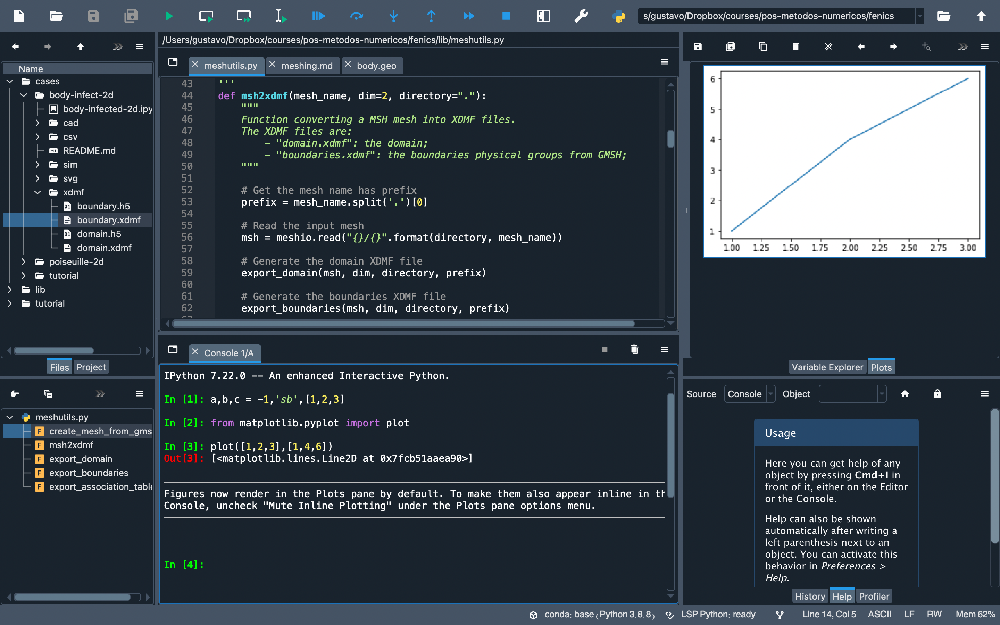

Ambientes de desenvolvimento e computação interativa¶
IDEs para ciência de dados¶
Um IDE (Integrated Development Environment) é um software que facilita programadores para o desenvolvimento de softwares.
Funcionalidades básicas de um IDE:
edição de texto
interpretação/compilação automatizada
depuração
Alguns IDEs comumente usados¶
Exemplo de uso: Spyder 5.0¶
{kind=link}
Não existe “o melhor IDE”. A escolha depende do gosto pessoal, da necessidade e dos objetivos. Qualquer que seja a sua opção, algum tempo deve ser gasto no entendimento das funcionalidades de cada um e na organização do workflow individual.
Completação de código inteligente¶
Cadernos interativos¶
A computação interativa torna a interação entre pessoas e máquinas mais dialógica e fácil
Hoje, cadernos interativos são quase indispensáveis para um cientista de dados
O Projeto [Jupyter]¶
Iniciado em 2014, lançou a proposta dos chamados notebooks:
Permite que textos, códigos e elementos gráficos sejam integrados em uma espécie de caderno “vivo”.
Jupyter notebooks são interfaces baseadas em web onde podemos executar códigos
Diferentes linguagens possíveis desde que alteremos os kernels.
Para Python, ele dispõe do tradicional kernel IPython.
JupyterLab¶
Interface de nova geração para o Jupyter
Capacidade para:
editar texto
avaliar código
pré-visualização de gráficos, figuras, tabelas e muito mais
Depuração ou funcionalidades específicas alcançadas por meio de extensões
Instalação¶
Usando conda, o JupyterLab pode ser instalado pelo comando:
conda install -c conda-forge jupyterlab
Inicialização¶
Inicialize pelo Anaconda Navigator ou pela linha de comando usando:
jupyter-lab
O ambiente será aberto em seu navegador web padrão em um endereço similar a:
http(s)://<server:port>/<lab-location>/lab
Para lançar o Jupyter Notebook padrão, use menu Help > Launch Classic Notebook.
Elementos da interface¶
Área de trabalho principal
Barra lateral esquerda
Navegador de arquivos
Lista de kernels em execução
Paleta de comandos
Inspetor
Lista de abas
Barra de menus
Workspace¶
Cada sessão do JupyterLab reside em um workspace, cujas variáveis podem ser dinamicamente alteradas.
Funções de URL úteis¶
Reset do workspace: adicione
?resetna URL.
Exemplo:
http://127.0.0.1:8889/lab/tree/ICD/teste.ipynb?reset
Clonar o workspace atual para outro chamado copia: adicione
?clone=copia
http://127.0.0.1:8889/lab/tree/ICD/teste.ipynb?clone=copia
Estrutura de um arquivo .ipynb¶
O formato oficial de um Jupyter Notebook, com extensão .ipynb é construído sobre uma estrutura JSON.
[JSON] - JavaScript Object Notation, é um formato de intercâmbio de dados baseado em um subconjunto da linguagem JavaScript.
Em seu maior nível, o arquivo é um dicionário que contém algumas chaves, tais como:
metadata(dict)nbformat(int)nbformat_minor(int)cells(list)
Abaixo, temos um exemplo da estrutura JSON de um arquivo .ipynb.
{
"metadata": {
"kernelspec": {
"display_name": "Python 3",
"language": "python",
"name": "python3"
},
"language_info": {
"codemirror_mode": {
"name": "ipython",
"version": 3
},
"file_extension": ".py",
"mimetype": "text/x-python",
"name": "python",
"nbconvert_exporter": "python",
"pygments_lexer": "ipython3",
"version": "3.8.8"
}
},
"nbformat": 4,
"nbformat_minor": 5
}
Uma célula de texto deste material por exemplo é, no formato JSON, exibida como:
{
"cell_type": "markdown",
"id": "93e25ab1-2a8a-4baf-9bcf-a72057aa908f",
"metadata": {},
"source": [
"### Estrutura de um arquivo `.ipynb`\n",
"\n",
"O formato oficial de um _Jupyter Notebook_, com extensão `.ipynb` é construído sobre uma estrutura JSON.\n",
"\n",
"```{note}\n",
"[[JSON]](https://www.json.org/json-en.html) - JavaScript Object Notation, é um formato de intercâmbio de dado baseado em um subconjunto da linguagem JavaScript.\n",
"```"
]
}
Os principais elementos são:
cell_type: tipo de célula.id: identificador (único) de uma célula. É um objetostrde comprimento 1-64.metadata: opções que controlam o comportamento da célula.source: conteúdo da célula.
Entretanto, outros elementos podem estar presentes. Um exemplo de célula de código que retorna um erro é dado a seguir:
{
"cell_type": "code",
"execution_count": 5,
"metadata": {},
"outputs": [
{
"ename": "SyntaxError",
"evalue": "unexpected EOF while parsing (<ipython-input-5-ef2d20508391>, line 1)",
"output_type": "error",
"traceback": [
"\u001b[0;36m File \u001b[0;32m\"<ipython-input-5-ef2d20508391>\"\u001b[0;36m, line \u001b[0;32m1\u001b[0m\n\u001b[0;31m 2 - 98*( 7/3\u001b[0m\n\u001b[0m ^\u001b[0m\n\u001b[0;31mSyntaxError\u001b[0m\u001b[0;31m:\u001b[0m unexpected EOF while parsing\n"
]
}
],
"source": [
"2 - 98*( 7/3"
]
},
Formatos de saída de células¶
Diferentes tipos de arquivo podem ter uma saída renderizada de modo enriquecido.
Por exemplo:
Visualizando código HTML
import IPython.display as dpl
dpl.display(dpl.HTML('<h>Isto é um título</h2> <hr> é <sup>H</sup>ML</h1>'))
é HML
Visualizando código JSON
dpl.display(dpl.JSON({"a":'b',"meta":[1,2]}))
<IPython.core.display.JSON object>
Visualizando vídeo do YouTube
dpl.display(dpl.YouTubeVideo("fn3KWM1kuAw",width=500,height=400))
Visualizando áudio
# teste descomentando
#dpl.Audio(url="https://www.bands.army.mil/music/play.asp?TheArmySong2013_BandAndChorus.mp3",autoplay=False)
Visualizando imagem
dpl.Image('http://www.google.fr/images/srpr/logo3w.png')

Depuração¶
JupyterLab > 3.0 vem munido de depurador, mas é necessário kernel que o suporte.
Alguns conhecidos são:
Melhor maneira de ter suporte à depuração:
Criar um ambiente novo, chamado, digamos
jb, contendo JupyterLab 3.0 e um desses kernels
Exemplo:
conda create -n jd -c conda-forge jupyterlab=3 xeus-python
conda activate jd
O kernel pode ser habilitado via navegador ou seletor de núcleo.
Experimente um ambiente com depuração aqui
Extensões¶
O JupyterLab é um ambiente extensível
Pode ser customizado ou melhorado
Extensões incluem:
temas
visualizadores
editores
renderizadores.
Adicionam itens ao menu, à paleta de comandos ou configurações
Instalação de extensões¶
Podem ser de dois tipos: originais e pré-construídas.
Extensões pré-construídas são mais fáceis de gerenciar
Instaláveis usando o gerenciador de extensões:
jupyter-labextension install
Verifique requisito de instalação:
node-js> 12.0.0
conda install nodejs -c conda-forge --repodata-fn=repodata.json
Adicionalmente, elas podem ser instaladas usando o painel lateral esquerdo.
Extensões recomendadas para cientistas de dados¶
JupyterLab drawio:
jupyterlab-drawioJupyterLab plotly:
@jupyterlab/plotly-extensionJupyterLab Github:
@jupyterlab/githubJupyterLab bokeh:
jupyterlab_bokehJupyterLab chart editor:
jupyterlab-chart-editor
Para instalar use: jupyter-labextension install EXT, substituindo EXT por um dos nomes acima.
Exercício recomendado¶
Configure seu ambiente de trabalho com IDE ou Jupyter Notebook, com seus temas e extensões de preferência.